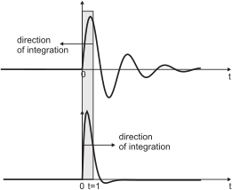

Figure 12:
A causal system only reacts to it's input.
Causal signals only evolve in positive time. Per definition the
signal is zero for  .
.
|

|
Fig. 12 illustrates the concept of causality.
Causal systems cannot look into the future. They can only react
to a certain input. Causal signals are kept zero for
per definition.
Figure 13:
Illustration of the convolution. The shaded area
shows the integration for  .
.
|
|
github / contact
![\includegraphics[width=0.75\textwidth]{convol}](img209.svg)